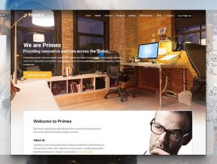
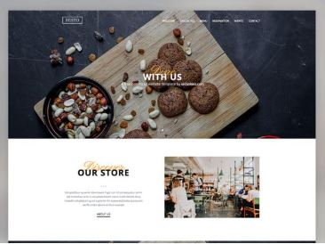
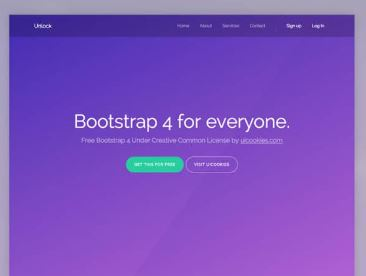
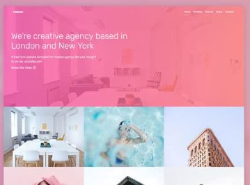

Sliders are an important element in UI design. And they have evolved a lot in the past few years. The UI elements must adapt as our interaction with devices has changed immensely. For example, we now swipe more than clicking, and designs are mostly thumb-friendly rather than mouse-friendly. Sliders are one of the few elements that can adapt to both touch and old-school mouse interfaces. If you plan to make a versatile slider that fits mobile and desktop interfaces, these bootstrap slider examples could help you.
In this bootstrap slider designs collection, you can find inspirations for :
Carousel card sliders
Bootstrap testimonial sliders
slider transition/animation effects
Bootstrap image slider for gallery
Bootstrap 5 carousels for multiple item
Categories
Admin Templates (8)
Bootstrap Templates (88)
Code Snippets (12)
CSS Templates (29)
Free HTML Templates (99)
Freebies (2)
HTML (89)
Inspiration (97)
Mockups (25)
Shopify (18)
Website Templates (73)
WordPress Themes (98)
Bootstrap Slider V08

The V08 Bootstrap slider example gives you a lively slider design. Big slides and elastic-like animation will grab users’ attention for sure. The creator has made this one as an auto-rotating bootstrap slider, so the chances of showing more products to your visitors are great. You can change the auto-rotating option if you want. The simple code structure will make customization easier and let you easily add custom features to the design. Since the entire code script is a downloadable file, you can use it in the code editor you like.
If you are looking for a simple yet elegant-looking bootstrap slider/carousel, this is the best option for you. The creator has used thumbnails in this bootstrap slider to make the interactions easier. Plus, the user will know the slider content before picking it. Animations are sleek and simple to make the slider work flawlessly on all types of websites and applications. You can incorporate this design into any of your projects because of its flexible code structure. Overall, the V10 is the best option for image and product sliders.
Swipe Cards

Cards are used widely in modern UI designing. Using cards and swiping gestures is a good idea as the touch interface slowly reaches the laptops. In this slider, the developer has used cards to give a small gist about the product. With a single tap, the user can expand the cards and see the details of the product. Shadow and depth effects are used smartly to differentiate the cards from the background. The transition animations are swift and clean, giving users a better experience. Since the original design is small, you can easily fit it in any part of the website.
Motion Reveal Slideshow

This design will impress you if you want an interactive bootstrap slider for your portfolio website. As the name implies, the creator has used a motion reveal animation, i.e., when you click the next button, the animation moves from right to left, and when you click the previous button, the animation effect moves from right to left. The creator has given an arrow at the bottom to read the related article or information about the image. Using this bootstrap slider for the portfolio, you can use the arrow to show the single project detail page. The slider is working perfectly from the front end; we have to edit and make the design fit our needs.
Diagonal Slideshow
Most bootstrap slider examples in this list are horizontal sliders, and some are vertical sliders. If you are not impressed by both sliders, this diagonal slider might inspire you. The entire slider moves in a diagonal path. Apart from the diagonal path, the creator has also used little animation effects to spice up the design. For example, the image title is animated, and an interactive dynamic hover effect is also included in this template. Though it is a concept model, the creator has given us a fully functional, complete design. The entire code script used to make this design is shared with you in a download file. Hence, you can easily edit the code and tune the slider per your needs.
Animated Fragment Slideshow
This is an advanced bootstrap slider concept. As the name implies, the sliders are shown as slices and are animated as fragments. So, you get an interactive design with fluid animation effects. For this smooth, fluid animation, the creator has used CSS3 and Javascript frameworks. On the info page, the creator clearly explained the code structure, so you can easily understand how the creator handled the code. If you are a beginner, this template will help you understand the capacity of modern web development frameworks. The default design is perfect, so you can use it directly on your website or application.
Cross road slideshow

Crossroads Slideshow is almost similar to the Diagonal Slideshow concept mentioned above. In this example, the creator has used texts on one diagonal and images on another, so you get a crossroad-like design. Along with the slider, you also get an interactive mouse pointer design to give a dynamic feel when the user uses the slider. In this concept, the creator has used a full-page design to let the user fully feel the design. If you like this entire design, you can use the whole code snippet or pick the elements and effects you want and use it in your design.